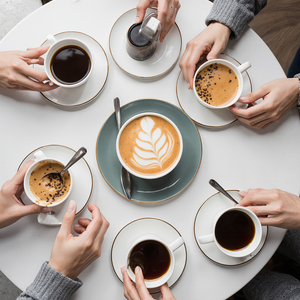
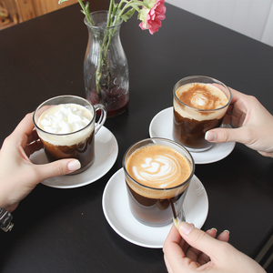

Sobre Nós
Fundada em 2000, a Padaria do Bairro nasceu do sonho de trazer o verdadeiro sabor artesanal para a nossa comunidade. Nossa missão é oferecer produtos sempre frescos, feitos com ingredientes de alta qualidade.
Nossa História em Vídeo
Conheça o processo de fabricação dos nossos pães e o carinho da nossa equipe no vídeo abaixo:
Nossos Produtos
Temos uma grande variedade de delícias assadas diariamente. Nossos padeiros começam a trabalhar de madrugada para garantir o seu café da manhã. Confira nossos destaques:
- 🥖 Pão francês quentinho
- 🍰 Bolo de Cenoura com Cobertura de Chocolate
- 🥐 Croissant Recheado de Amêndoas
- 🍫 Bolo de chocolate
- 🍗 Torta de frango
Cardápio Completo
| Categoria | Produto | Descrição breve | Preço |
|---|---|---|---|
| Pães | Pão francês | Tradicional pão de sal, assado a cada hora com casca crocante | R$ 0,80 (unid.) |
| Pães | Pão de açúcar | Massa doce e fofinha coberta com crosta de açúcar cristal | R$ 2,50 (unid.) |
| Pães | Croissant | Autêntica massa folhada amanteigada francesa | R$ 5,00 (unid.) |
| Pães | Pão de Queijo | Receita mineira tradicional feita com queijo meia cura | R$ 3,00 (unid.) |
| Doces | Bolo de chocolate | Massa molhadinha com cobertura generosa de brigadeiro | R$ 8,00 (fatia) |
| Doces | Torta de morango | Massa crocante com creme de baunilha e morangos frescos | R$ 10,00 (fatia) |
| Doces | Sonho recheado | Massa frita polvilhada no açúcar, recheio de creme ou doce de leite | R$ 4,50 (unid.) |
| Salgados | Coxinha | Massa de batata macia com recheio cremoso e bem temperado de frango | R$ 6,00 (unid.) |
| Salgados | Pastel de queijo | Massa frita na hora, super crocante e com bastante queijo derretido | R$ 5,50 (unid.) |
| Salgados | Esfirra | Massa de pão macia com recheio úmido de carne temperada | R$ 4,50 (unid.) |
Galeria de Fotos
Um pouco do nosso espaço e dos produtos que preparamos com muito carinho para você.
Nossos Cafés e Lanches




Nosso Espaço

Diferenciais
Por que escolher a nossa padaria? Nós temos características únicas que fazem toda a diferença no sabor e no seu dia a dia.
- 🥬 Ingredientes frescos diários.
- 📜 Receitas tradicionais.
- 🤝 Atendimento personalizado.
Localização e Horários
Estamos localizados no coração do bairro, na Rua do Bairro, número 123. Venha nos visitar, tomar um café coado na hora e provar nossas delícias!
Horários de Funcionamento
| Dias da Semana | Horário |
|---|---|
| Segunda a Sexta | 06:00 às 20:00 |
| Sábados | 07:00 às 18:00 |
| Domingos e Feriados | 07:00 às 13:00 |